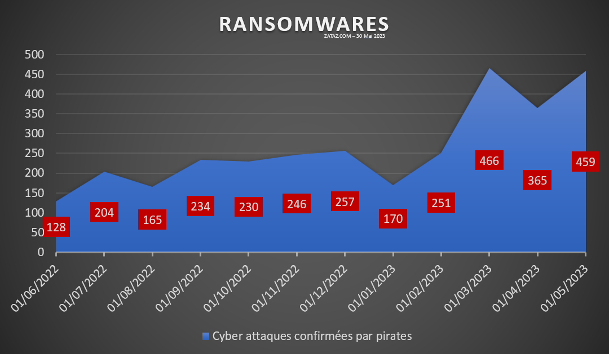

Les Ransomwares : Le Nouveau Fléau des Entreprises
Introduction
Au fur et à mesure que la technologie évolue, de nouvelles menaces émergent et constituent des défis de sécurité majeurs pour les entreprises du monde entier. L'un de ces défis les plus redoutables est la montée en puissance des ransomwares, des logiciels malveillants qui chiffrent les données d'une organisation et exigent le paiement d'une rançon pour leur restitution. Dans cet article, nous allons explorer en profondeur les ransomwares, comprendre leur fonctionnement et discuter des mesures que les entreprises peuvent prendre pour se protéger contre cette menace croissante.
Les Ransomwares : Comment Fonctionnent-ils ?
Les ransomwares agissent en verrouillant l'accès aux fichiers et aux systèmes d'une entreprise à l'aide d'un cryptage fort. Une fois que les données sont chiffrées, les attaquants demandent généralement une rançon en cryptomonnaie pour fournir la clé de déchiffrement. Les attaques peuvent être initiées via des pièces jointes malveillantes, des liens infectés, des vulnérabilités logicielles ou des attaques par force brute sur les mots de passe.
Impact sur les Entreprises
Les ransomwares ont des conséquences dévastatrices sur les entreprises. Les pertes financières peuvent être énormes, allant des rançons elles-mêmes aux coûts associés à la récupération des données, à la restauration des systèmes et à la perte de productivité. De plus, la réputation d'une entreprise peut être sérieusement ébranlée en cas de violation de données et de divulgation publique.
Mesures de Protection Contre les Ransomwares
1. Sauvegardes Régulières : Effectuez des sauvegardes régulières de vos données critiques et assurez-vous qu'elles sont stockées hors ligne dans un emplacement sécurisé. Cela facilitera la restauration en cas d'attaque.
2. Sécurité des Courriels et de la Navigation : Utilisez des filtres anti-spam et anti-phishing pour bloquer les courriels malveillants. Éduquez les employés sur les dangers potentiels des pièces jointes et des liens suspects.
3. Mises à Jour et Correctifs : Maintenez vos systèmes d'exploitation et vos logiciels à jour avec les derniers correctifs de sécurité pour réduire les vulnérabilités exploitées par les attaquants.
4. Sécurité des Ressources Partagées : Restreignez les autorisations d'accès aux fichiers et aux dossiers en fonction des besoins réels des utilisateurs. Limitez les privilèges administratifs.
5. Formation des Employés : Sensibilisez et formez régulièrement les employés aux bonnes pratiques de sécurité, en mettant l'accent sur les comportements en ligne sécurisés.
6. Solution de Sécurité : Mettez en place des solutions de sécurité avancées, telles que des logiciels de détection et de prévention des ransomwares, ainsi que des pare-feux sophistiqués.
Conclusion
Les ransomwares constituent une menace sérieuse pour les entreprises de toutes tailles et de tous secteurs. En adoptant une approche proactive en matière de sécurité, en investissant dans des solutions de protection avancées et en éduquant le personnel, les entreprises peuvent renforcer leur résilience face à cette menace croissante. La vigilance et la préparation sont essentielles pour minimiser l'impact potentiel des ransomwares et pour protéger les données et la réputation de votre entreprise.